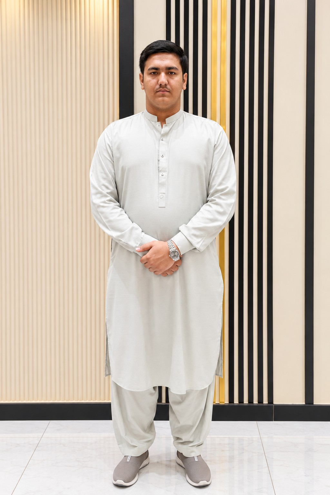

Respect personal data
Collect only what a service needs, explain how information is used and protect access to it.
PAKISTAN · BUILDING FOR THE WEB
I’m Bakhtawar Khan (MBK), Founder of MBK Global. I explore web development, practical AI, APIs and automation while building useful digital experiences. This portfolio brings together my projects, ideas and ongoing learning.

SELECTED WORK / 01
THE PERSON BEHIND THE BUILDS / 02
Selected portraits of Muhammad Bakhtawar Khan — founder of MBK Global, learning in public and building digital experiences across web, AI, APIs and automation.



THE 10-TRILLION-DOLLAR MINDSET / NOT A VALUATION CLAIM
Big outcomes start as useful ideas. Explore the projects, identify a real problem, and turn the next ambitious concept into a clear plan — one practical milestone at a time.
THE MBK UNIVERSE / 02
A LITTLE ABOUT ME / 02
I’m interested in how technology can turn everyday problems into useful products — from clean interfaces to AI workflows and API-powered tools.
More about me ↗FROM THE JOURNAL / 04
A personal introduction to the curiosity and practical work behind MBK.
Read article ↗BRAND NOTES / 3 MIN READA growing digital identity for creative work, web projects and experiments.
Read article ↗BUILD LOG / 5 MIN READWhat making focused web utilities teaches about usability and problem-solving.
Read article ↗TECHNOLOGY WITH PEOPLE IN MIND
Collect only what a service needs, explain how information is used and protect access to it.
Readable content, keyboard support, meaningful labels and responsive layouts help make digital experiences more inclusive.
Check automated outputs, protect sensitive information and keep human oversight where it matters.
FEEDBACK / COMMUNITY
A sample community-feedback carousel. Avatars are illustrative and the text is example copy, not verified testimonials or actual ratings.
Illustrative profile · sample content
The best feedback starts with clear goals, honest timelines and useful questions.
Sample community feedback · not a verified customer reviewIllustrative profile · sample content
Good digital work improves when people share context, test ideas and communicate openly.
Sample community feedback · not a verified customer reviewIllustrative profile · sample content
Accessible layouts, readable copy and careful checks make websites easier to use.
Sample community feedback · not a verified customer reviewIllustrative profile · sample content
Breaking a big idea into practical milestones can make the build process easier to follow.
Sample community feedback · not a verified customer reviewIllustrative profile · sample content
A helpful interface should make the next step obvious and avoid unnecessary friction.
Sample community feedback · not a verified customer reviewIllustrative profile · sample content
Feedback is most valuable when it is specific, respectful and connected to real user needs.
Sample community feedback · not a verified customer reviewIllustrative profile · sample content
Clear scope, realistic promises and regular updates help create healthier collaborations.
Sample community feedback · not a verified customer reviewIllustrative profile · sample content
Good explanations help more people understand tools, APIs and digital workflows.
Sample community feedback · not a verified customer reviewIllustrative profile · sample content
Responsible projects explain what data they use and avoid collecting what they do not need.
Sample community feedback · not a verified customer reviewIllustrative profile · sample content
Questions from users can reveal improvements that a builder might otherwise overlook.
Sample community feedback · not a verified customer reviewSwipe or scroll sideways to explore all 10 cards →
IDENTITY / MBK GLOBAL
Muhammad Bakhtawar Khan (MBK) is the founder of MBK Global. Explore the founder profile, learn what the brand does, and find the portfolio projects and official contact links.
Read the factual profile, professional interests and associated project directory.
View founder profile ↗BRAND WEBSITEVisit the MBK Global website for the brand's public introduction and focus areas.
Visit MBK Global ↗OFFICIAL DIRECTORYFind the portfolio, public profile links, WhatsApp and associated project sites.
Open official links ↗HAVE AN IDEA?
PERSONAL ARCHIVE / 001 — THE PERSON BEHIND MBK
Muhammad Bakhtawar Khan (MBK) — founder of MBK Global, exploring web development, AI, APIs and digital technology through hands-on projects.
01 / 0402 / 0403 / 04 04 / 04
04 / 04MBK PORTFOLIO / SITE DIRECTORY
Browse Muhammad Bakhtawar Khan (MBK), MBK Global projects, services, technical guides and official contact resources.